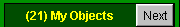
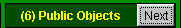
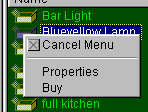
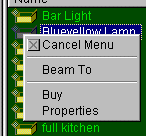
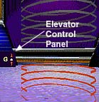
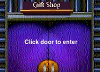

Shopping Basics | Quick
Shopping in 2D | Quick Shopping in 3D
Placing Objects
So you've got yourself a fabulous 3D home, but it's empty? You can fix that by going shopping in the mall, but before you teleport to your great mall adventure you should know these basics:
Shopping Basics:
First: Check your account for how much City Cash (CC) you have
to spend at: My Info > Personal Info >Money before shopping because the
shops accept only City Cash and not American Express (yet).
Second: You can have a maximum of 32 objects in your home. You can figure out how many objects you have by clicking the Next or arrow button beside the chat window until you find My Objects . The number in parentheses is the number of objects you own.
- Use the Jump Gate located on the right to jump to The Mall or click the map at the base of the control panel and select The Mall.
- You'll be transported to the shopping mall via 2D.
- While in 2D you'll see a list of stores. Select a store.
- Click the Next button beside the 2D-chat window until you come to Public Objects 
- You'll see the list of objects for sale in that store.
- Right click on an object name and a menu will pop up.
Cancel Menu: Will close the small pop-up window.
Display or Properties: Will launch a small window with information on the object.
Buy: Will launch a small window with information on the object, plus give you the Buy option. When you buy something the price is deducted from your Cybertown CC (City Cash) account and the object is deposited in My Backpack
- Click the 2D image of to select another store.
Quick Shopping in 3D:
You need the blaxxun Contact software to view the 3D images. Read
Get into 3D for those instructions.
Ready?
- Use the Jump Gate located on the right to jump to The Mall
or click the map at the base of the control panel and select
The Mall.
Alternate 3D route:
Click the Mall banner in the 3D City Plaza. - You'll be transported to the shopping mall via 2D.
- While in 2D you'll see a list of stores. Select a store.
- Click the
 button. Now you can move around the store and check out what's for sale.
You can also use the catalog
button. Now you can move around the store and check out what's for sale.
You can also use the catalog - Click the arrow button beside the 3D-chat window until you come to Purchasable Objects You'll see the list of objects for sale in that store.
- Right click on an object name and a menu will pop up.
Cancel Menu: Will close the small pop-up window
Beam To: Guess what this one does.
Properties: Will launch a small window with information on the object.
Buy: Will launch a small window with information on the object, plus give you the buy option. When you buy something the price is deducted from your Cybertown CC (City Cash) account and objects are deposited in My Backpack. - You can visit other stores in 3D by exploring the mall on your own or by using the directory in the center of the Shopping Mall . Use the elevator to access other floors and look for the store name above the door.
|

|

|
Happy Shopping!
Related Subject: Placing Objects